1951
Nimrod
Nimrod was an early computer that was built specifically to play the game Nim, which is often seen as the first video game.
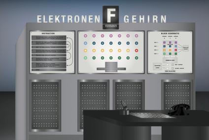
1967
The BrownBox
Ralph Baer created what is seen as the first video game console by making a system prototype to explore playing games on television screens.
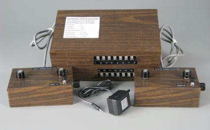
1972
Magnavox Odyssey
The Magnavox Odyssey was the first commercial video game console created by creator of the brown box, Ralph Baer, for Magnavox. It also introduced the light gun for home systems.
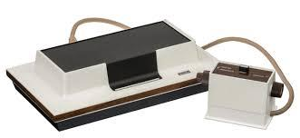
1976
Atari Pong
To compete with the Odyssey, Atari released a home games console of their popular arcade game Pong to rival Magnavox.
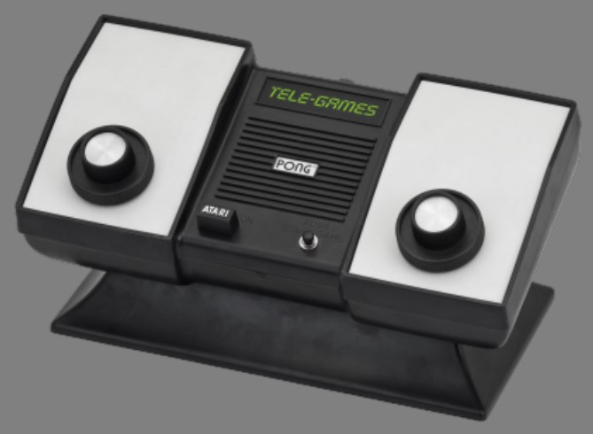
1976 - '78
Coleco Telestar
Between the years 1976-78, Coleco released a series of games consoles with games ranging from pong variants to racing and light-gun shooter games. There were 14 different consoles in the series.
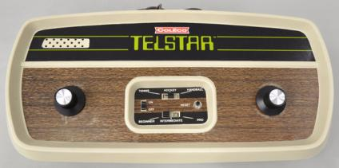
1977
Atari 2600 (VCS)
Originally called the Atari VCS, the Atari 2600 is one of the most iconic consoles released by Atari. It came with two joysticks and used ROM cartridges which had been used in an earlier console (the Fairchild Channel F). The
2600 was also home to the industry crashing game E.T. the Exra-Terrestrial, released in 1982, it is often regarded as the worst game ever due to its rushed production and can be linked to the game industry crash in 1983.
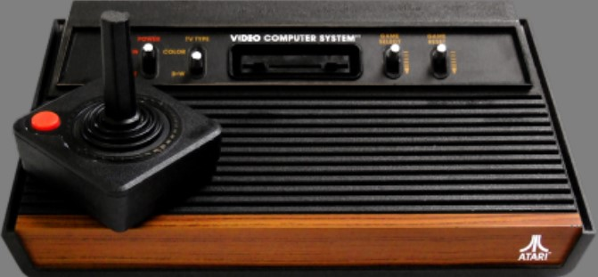
1977 - '80
Nintendo Colour TV-Game
Nintendo Colour TV-Game Similarly to the Telestar, Nintendo released a series of consoles between 1977-80. These systems also ran games from pong to racing games along with a console port of Nintendo's first arcade game.
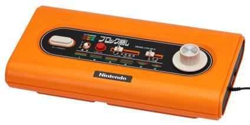
1978
Magnavox Odyssey²
The Magnavox Odyssey², otherwise known as the Phillips Vidopac G7000 or Phillips Odyssey², is the second-generation video game console of the Magnavox Odyssey. It was created by Magnavox and Phillips, whichnow owns Magnaox
as a subsidiary to the company.
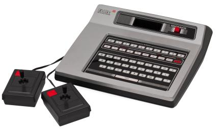
1979
MicroVision
MicroVision was the first handheld console that used interchangeable cartriges for games. It had 12 games and was created by the Milton Bradley Company.
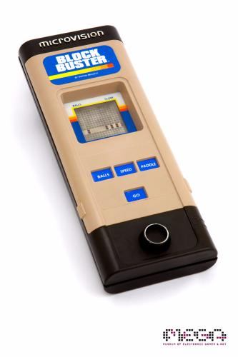
1980
Nintendo Game & Watch
The Game & Watch is a series of handheld games developed from 1980-91 by Nintendo. It launched Nintendo into the mainstream as it was the company's first major success, it also later inspired the Game Boy.
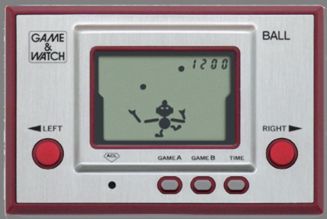
1983/1985 - '87
Nintendo Famicom/NES
It was originally released as the Family Computer or Famicom in Japan in 1983 and later released to the rest of the world between 1985 and 1987 as the Nintendo Entertainment System. By becoming the best selling games console
of its time, it brought back the video games industry after the crash in 1983 in North America.
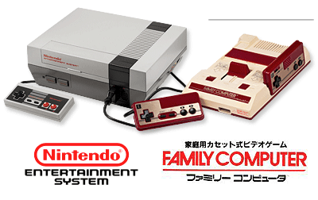
1985 - '89
Sega Mark III/Master System
Produced by Sega, the Master System was first released in 1985 as the Mark III in Japan. It was intended to compete with the NES but its game library was not as well received due to Nintendo stopping third-party developers
from releasing their games for other consoles. The console is the longest living console as it is still popular in Brazil.
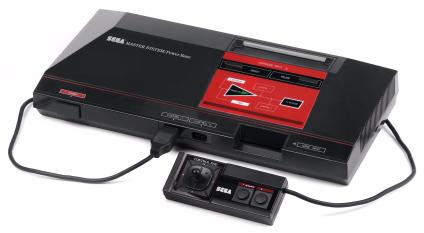
1988 - '89
Sega Genesis/Mega Drive
Manufactured by Sega, the Mega Drive was a popular game system for the time. It featured the beginning of Sega's mascot, Sonic the Hedgehog and also featured the home version of Mortal Kombat, which sparked controversy and
led to the ESRB creation.
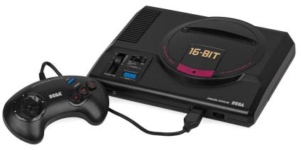
1989 - '90
Nintendo Game Boy
Made by Nintendo it was the first handheld console of the Game Boy series. It used features of the Game & Watch and the NES and was home to many blockbuster games of the time.
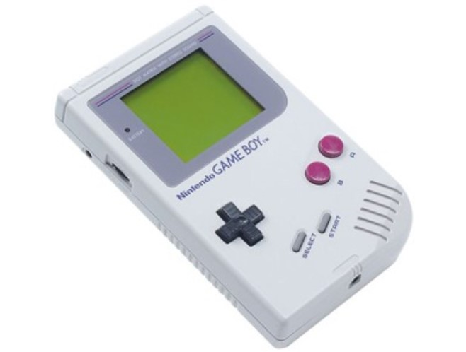
1989
Atari Lynx
The Atari Lynx featured many new technological features such as the first backlit display, switchable configuration of the controls and network connectivity to up to 17 other Lynx's.
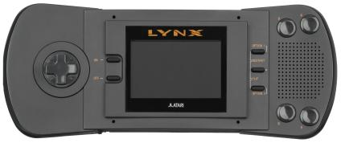
1990 - '92
Super Nintendo Entertainment System
Also known as the SNES, Super Famicom and Super Comboy, it is the successor to the NES and featured advanced graphics compared to other consoles of the time.
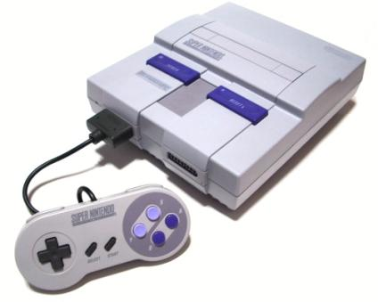
1991 - '92
Phillips CD-i
The Phillips CD-i is a CD console developed by Phillips, Sony and Magnavox. It was a commercial failure and features infamously bad editions of popular Nintendo series such as Hotel Mario and three Ledgend of Zelda games known for
their terrible cut scenes.
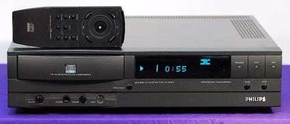
1993 - '94
Atari Jaguar
The Atari Jaguar was marketed as the first 64-bit console despite only being able to partially support 64-bit games and a limited library of games for it left controversy around the console. This left Atari in a less powerful position
and meant that the Jaguar was the last home console to be made by Atari.
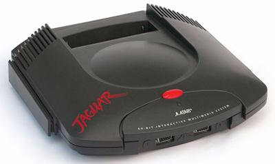
1994 - '97
PlayStation
Originally developed as a CD-ROM Nintendo console before being cancelled, the PlayStation was the first console manufactured by Sony Interactive Entertainment (then Sony Computer Entertainment). It became the best selling console of
the time and was the first game console to sell 100 million units.
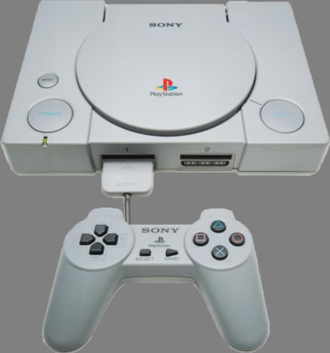